Warna app masih emas pudar di atas coklat-hitam, padahal landing sudah pindah ke obsidian + amber. App ikut pindah. Kacanya juga dapat sesuatu untuk dibiaskan: cahaya amber di belakang layar, sama seperti hero landing.
#080706, amber #E5AD51 untuk tombol utama dan tab aktif, krem #F4F1EB untuk teks/api/saya setelan, sisa hari, pantauan 4/10, kabar belum dibaca · /api/bacaan untuk pasar & tf di setelan (antrean + cache 20 dtk yang sama) · lanjut belajar dari kemajuan lokal
Android: kalau blur gagal diam-diam, isian dipekatkan (aturan 19 Sep). Tepi berkilap dan cahaya di belakang tetap membuatnya terbaca sebagai kaca.
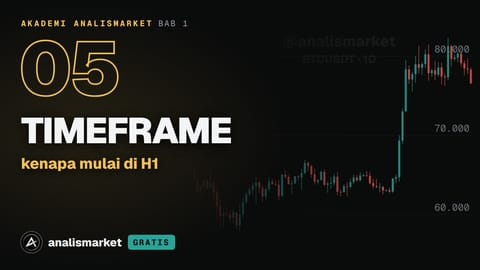
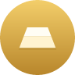
XAU/USD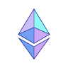
ETHUSDT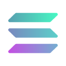
SOLUSDT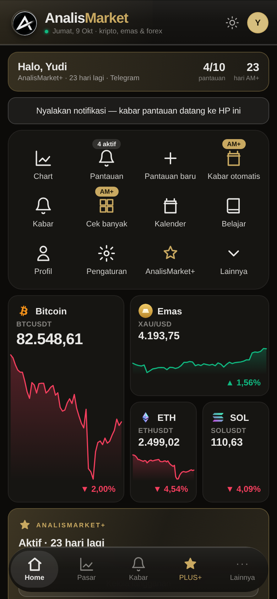
Sepertiga kisi 12 ikon (Chart, Kabar, AM+, Lainnya) dobel dengan tab. Status AM+ muncul dua kali di satu layar. Kacanya tidak terlihat karena di belakangnya tidak ada apa-apa untuk dibiaskan.
"Belajar" di app sekarang berisi 16 istilah dan cara baca kartu, semuanya teks. Akademi sudah punya 60 pelajaran, 7 di antaranya sudah tayang, dan app belum menyebutnya sama sekali. Ia layak dapat satu tab, dengan jalur bab yang sama seperti di web.
/api/saya/akademi sudah hidup: 6 bab · 60 video · 7 tayang · akses per tier. Kemajuan disimpan di perangkat, sama seperti web ("tersimpan di perangkat ini").
Build Play: harga Akses penuh tidak dicetak. Baris terkunci cukup berbunyi "terbuka dengan Akses penuh", tanpa jalan beli.
6 bab · 60 pelajaran · 7 sudah tayang
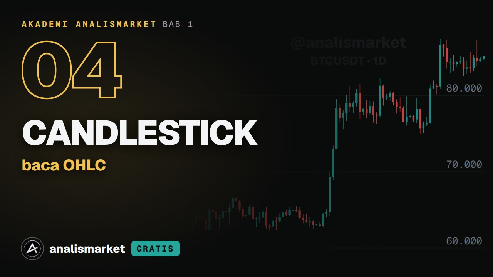
sisa 1:52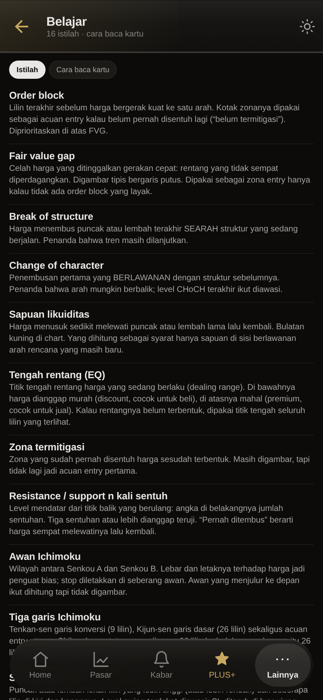
Belajar sekarang: 16 istilah dan cara baca kartu, semuanya teks. Tanpa video, tanpa kemajuan. Orang yang datang dari tombol "Jelajahi Akademi" di landing tidak menemukan Akademi di app.
Halaman Akademi menjanjikan "istilah yang bisa kamu lihat langsung di chart". App satu-satunya tempat janji itu bisa ditepati dengan satu ketukan: pelajaran OHLC membuka BTCUSDT h1, pelajaran support & resistance membuka mesin SnR.
/api/saya/akademi/putar?id= alamat bertanda tangan · lilin dari /api/bacaan (permintaan yang sama dengan membuka chart-nya) · layar Pasar yang sudah ada
expo-video modul native. Sesudah build, jalankan periksa-apk: pustaka di proyek ini sudah tiga kali menyelundupkan izin.
Satu lilin merangkum harga buka, tertinggi, terendah, dan tutup dalam satu periode.
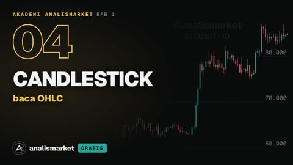
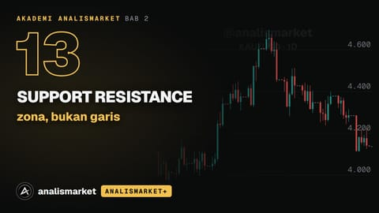
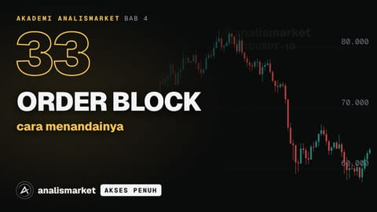
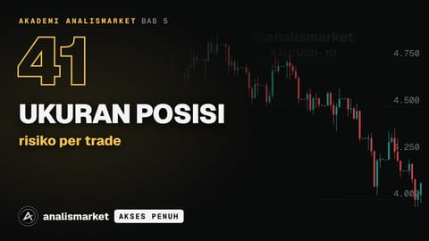
Peta ini bisa dimulai statis di app (5 baris di atas). Kalau tim bot menambah kolom contohChart di API Akademi, peta itu pindah ke server dan ikut tiap video baru tanpa rilis app.
Tab PLUS+ sekarang berisi daftar centang "terbuka" dan FAQ. Pelanggan cuma bertanya dua hal: masih berapa lama, dan apa yang sedang jalan. Kartu ini menjawab keduanya dengan angka dari akunnya sendiri.
plusBerakhirPada/api/saya · /api/saya/kabar-otomatis (dipilih, jam) · akses dari /api/saya/akademi
Akun gratis melihat kartu grafit "Gratis" dan daftar yang sama dengan gembok. Di build Play tanpa harga dan tanpa jalan beli lewat bot; di build tautan unduhan, harga dari hargaPlus().
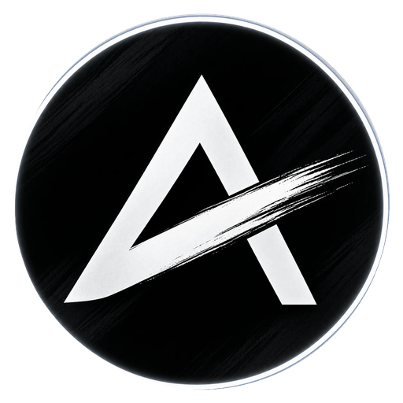
ANALISMARKET+AktifBerakhir sendiri di tanggalnya. Tidak ada potong otomatis.
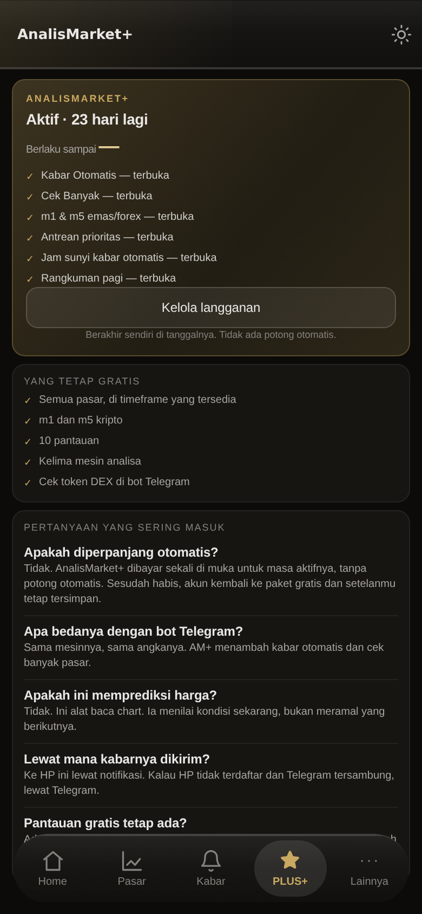
Enam baris "— terbuka" yang tidak bisa diketuk, lalu FAQ. Pelanggan tidak bisa langsung ke fitur yang sudah dibayarnya dari sini, dan Akademi Bab 2–3 tidak disebut sama sekali.
Hasil fitur AM+ yang paling terasa masih berupa tabel teks empat kolom. Jadikan papan: dua belas pasar terlihat sekaligus, yang Setup naik ke atas, dan satu ketukan membuka bacaannya di tab Pasar.
arah sengaja tidak dicetak, cuma keadaancekBanyak() yang sudah ada. Per baris: mesin, ideal, jarakAtr, sebab. Pilihan terbaik per pasar memakai urutan app sekarang · set pasar disimpan di AsyncStorage
Sparkline per ubin sengaja tidak ada: 12 × /api/bacaan berarti ±900 KB dan ±12 detik antrean di zona 1 r/s. Meteran ATR gratis karena datang dari jawaban yang sama.
terbaik() sekarang)ideal + sebabjarakAtr; bilah penuh = 3 ATRKetuk ubin → tab Pasar dengan pasar itu, tf yang sama, dan mesin terbaiknya. Tidak ada layar bacaan kedua yang bisa beda pendapat dengan yang pertama.
Lima layar, satu bahasa visual dengan landing yang live sekarang. Kelimanya memakai API yang sudah ada; cuma pemutar video yang butuh satu modul native (build baru).